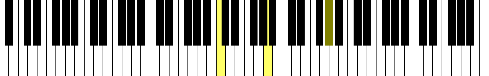
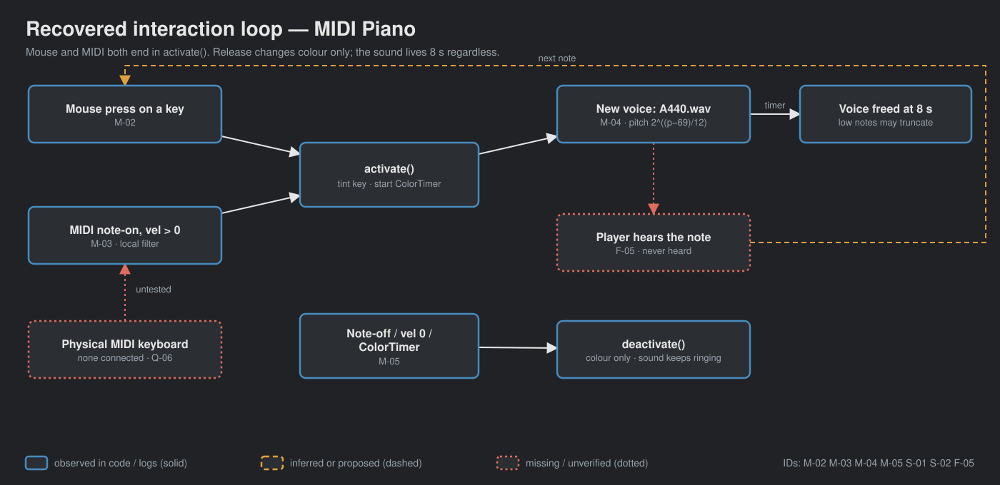
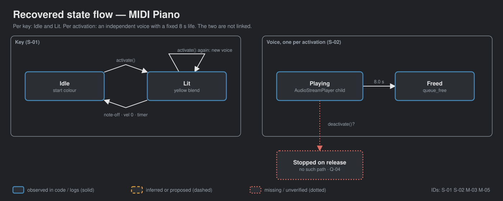

A local copy of Godot's MIDI Piano demo with a MIDI-filtering fix. Mouse or MIDI note-on lights a key and plays one A440 sample, pitch-shifted per key. A tech demo, not a game; the closest of its siblings to an instrument.
OBSERVED INFERRED MISSING
No gate signed. Arrow keys or space to advance.

OBSERVED godot/screenshots/piano-pressed.png ships with the upstream demo; no local window was opened.
→ GDD §1

→ GDD §3

→ GDD §6
| MIDI case | Upstream | Local |
|---|---|---|
| Aftertouch / controller | released the key | ignored |
| Note-on, velocity 0 | lit the key, new voice | releases, no voice |
| Synthetic parser checks | 3 of 7 fail | 7/7 · 13/13 |
Synthetic InputEventMIDI via Input.parse_input_event; no hardware.
| Check | Result |
|---|---|
| 88 keys, 52 white; A220/440/880 ratios | pass |
| Mouse on keys 69/70: highlight, voice, colour reset, cleanup | 12/12 twice |
| Physical MIDI device, heard pitch, low-note truncation | not tested |
→ GDD §16
→ GDD §14
Q-01 upstream or fixed behavior in films. Also: purpose, priorities, release/sustain (Q-04), truncation, MIDI setup, A440.wav rights.
→ GDD §15
A person can perform on it, so latency and release are design questions, not test items. Lifting a key only restores its colour; the note rings for 8 s. On a real keyboard that will feel wrong immediately.